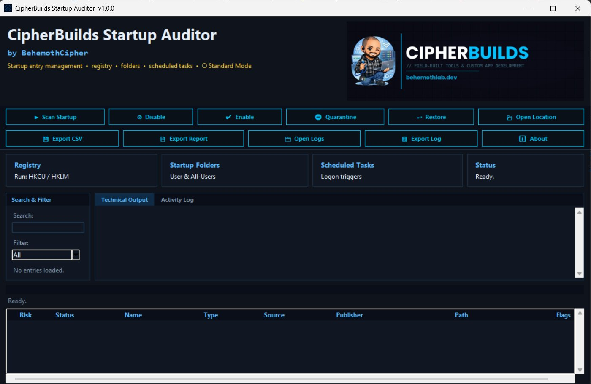

Find out what's secretly slowing down your Windows startup. Startup Auditor scans every program, shortcut, and scheduled task set to run at login — and tells you in plain English what each one is and whether it looks safe.

Free. No account required. Find out what's slowing down your startup in minutes.
Buy all five paid kits together as the Tool Kit for $130 and save $70 vs buying separately.